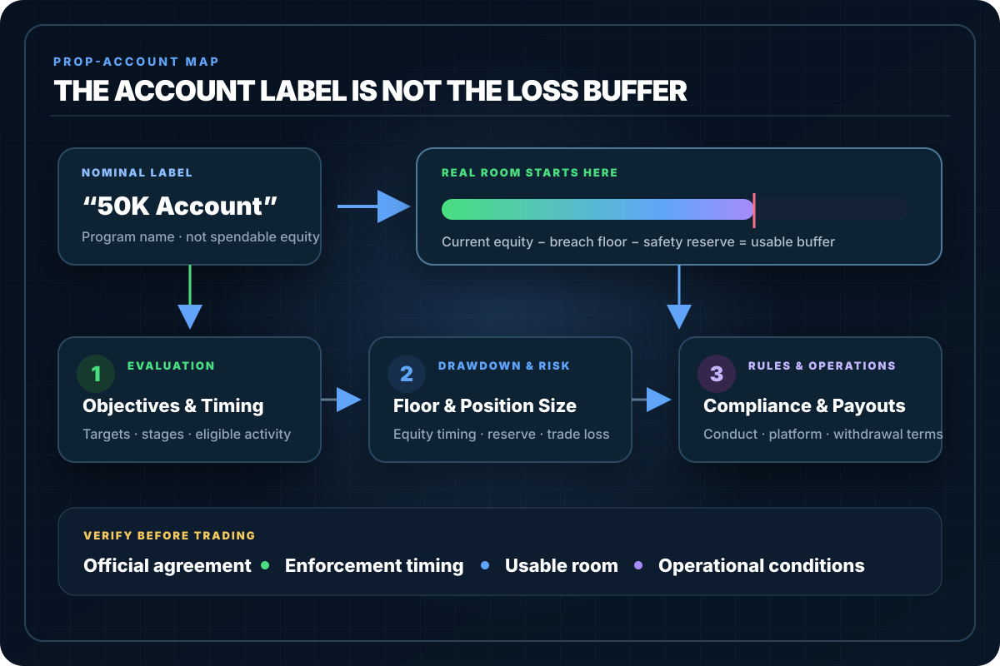

How Prop Firm Evaluations Really Work
A blunt breakdown of how prop firm evaluations actually work: profit targets, trailing drawdown, minimum days, and the rules that traders fail for the most.
Prop Firm Trading directory
Updated August 6, 2026
Search the complete 75-guide Prop Firm Trading library by account problem. Use the filters to browse evaluations, drawdown and risk, rules and violations, funding and payouts, or operations and platforms.

Complete Prop Firm Trading index
Every indexed guide in this section appears below. Search a rule or account problem, select one topic, or browse the first results and load more.
75 linked guidesDirect access—no account or sign-in required.
A blunt breakdown of how prop firm evaluations actually work: profit targets, trailing drawdown, minimum days, and the rules that traders fail for the most.
Complete guide to static, real-time trailing, and end-of-day drawdown: formulas, enforcement timing, worked examples, and an interactive comparison tool.
How prop firm daily loss limits and resets actually work, how much you can lose before a reset, and how to set your own daily max loss.
Learn how prop firm consistency rules work, including lot size balance, profit distribution, and behavior checks before payouts or scaling.
Plain-English breakdown of common mistakes traders make during futures prop firm evaluations, including rule violations, oversizing, and misunderstanding drawdown.
A blunt breakdown of how prop firm payout schedules work, when you can request your first withdrawal, and how often you get paid.
A direct guide to trade copier rules in prop firms, including what’s allowed, what’s banned, and how firms detect copier violations.
Straightforward rule comparison of Apex, Topstep, and Bulenox for futures prop firm evaluations. Trailing drawdown, scaling, payouts, and funding requirements.
Breakdown of a typical Apex-style futures prop firm evaluation: trailing drawdown, daily loss limit, profit target, contract limits, and realistic expectations.
A blunt breakdown of auto-liquidation rules in prop firms, how forced exits work, and what triggers automatic flattening of your account.
A blunt breakdown of automated strategy rules in prop firms, what bots are allowed, what gets you banned, and how risk desks detect automation.
A blunt breakdown of behavior-based risk scoring inside prop firms, how traders are internally rated, and which trading behaviors raise red flags.
Typical best days and times to trade futures prop firm evaluations, based on liquidity, volatility, and rule constraints.
A blunt guide to choosing the best prop firm account size for beginners, based on risk tolerance, drawdown limits, and realistic trading performance.
A blunt breakdown of consistency metrics in prop firms, how they are calculated, and what actually triggers consistency violations.
A blunt guide to contract suspension rules in prop firms, why certain markets are disabled during volatility, and how traders should prepare.
A blunt explanation of daily profit throttles in prop firms, how they work, and why some traders get blocked from scaling or hitting bigger payouts.
A direct comparison of evaluation, ExpressPass, and FastTrack prop firm accounts so you know which option fits your trading style and goals.
A blunt breakdown of the rule differences between evaluation accounts, funded accounts, and payout accounts so traders know exactly what changes.
A blunt breakdown of hedging rules in prop firms, how correlated markets affect risk, and why some hedge strategies trigger violations.
Learn the hidden prop firm rules and traps that blow up evaluations: soft rules, platform quirks, and fine print that kills funded accounts.
A blunt breakdown of holiday trading restrictions and modified hours in prop firms so you don’t get nailed by surprise closures and thin markets.
A blunt explanation of how data feed quality affects fills, slippage, rule violations, and overall chances of passing a prop firm evaluation.
Clear explanation of how futures prop firm evaluations work, including profit targets, minimum trading days, trailing drawdown, daily loss limits, and basic rules.
Realistic timeline for passing a futures prop firm evaluation based on daily goals, trailing drawdown, and ideal trading frequency.
A blunt breakdown of how often prop firms change their rules, why policies shift, and what traders should watch for to avoid getting blindsided.
A blunt breakdown of how prop firms use liquidity providers, order routing, and simulated fills to manage trader executions behind the scenes.
A blunt breakdown of how prop firm risk desks monitor traders, track violations, and detect dangerous patterns in real time.
A blunt breakdown of how prop firms calculate profit targets, why they scale by account size, and what traders must hit to pass evaluations.
A sharp breakdown of how prop firms detect account merging and copycat activity using timing patterns, execution fingerprints, and data monitoring.
See how modern prop firms detect multi-accounting and identity fraud using KYC checks, IP fingerprinting, device data and trading behavior before they fund you.
A blunt breakdown of how prop firms detect platform manipulation including DOM tricks, spoofing attempts, and order-flow abuse.
Learn how prop firms track your trades, risk metrics, and violations using backend systems that monitor every order, fill, and rule breach in real time.
A blunt look at how prop firms use automated monitoring systems to detect rule violations, risk patterns, and suspicious trading behavior in real time.
A blunt breakdown of how prop firms verify your identity, documents, and payout information before releasing profits or activating funded accounts.
A blunt breakdown of how traders move from evaluation to funded status and finally into a paid performance account at futures prop firms.
A blunt explanation of how weekend platform maintenance impacts prop firm traders, including data drops, platform resets, and account sync delays.
A blunt breakdown of instrument restrictions in prop firms, which markets beginners can’t trade, and why certain futures contracts are banned or limited.
A blunt breakdown of max order frequency rules in prop firms, how high message rates get flagged, and what traders must avoid.
Learn how max position size rules work in prop firm accounts so you don’t blow evaluations by loading too many contracts on a single trade.
A blunt comparison of micro futures vs full-size contracts in prop firm evaluations, including risk, drawdown impact, and which one actually helps you pass.
A direct breakdown of how modern prop firm payout models evolved, from fixed milestones to scaling plans and hybrid payout structures.
A blunt breakdown of multi-account trading ethics, anti-collusion rules, and what prop firms consider coordinated cheating.
A blunt guide to prop firm news trading restrictions, which events are banned, and how violations are triggered during economic releases.
Learn a simple one-contract evaluation strategy for prop firm futures challenges that protects your trailing drawdown and keeps you in the game.
A blunt breakdown of overnight margin spikes, how prop firms manage after-hours risk, and why forced flatten policies activate without warning.
Why overtrading destroys prop firm evaluations and the exact daily rules that stop it permanently.
Simple, one-contract prop firm evaluation game plan: daily goals, max loss, number of trades, and when to stop trading.
Learn how prop firm news filters work, which economic events are restricted, and how traders avoid violations during high-impact reports.
A blunt breakdown of prop firm payout methods—ACH, wire transfers, crypto, and Deel—so you know exactly how traders actually receive their money.
A clear breakdown of prop firm refund policies, when evaluation fees are returned, and the exact conditions traders must meet to qualify for refunds.
A blunt breakdown of prop firm reset fees, when you should use one, and when buying a fresh evaluation is the smarter move.
A blunt breakdown of prop firm rules for trading low-liquidity sessions like Asia, holidays, and half-days so you don’t blow accounts in thin markets.
Understand prop firm scaling plans, how contract limits grow as your balance increases, and how to avoid violations when sizing up.
A direct explanation of how taxes work for prop firm payouts, including income classification, reporting rules, and what traders must track.
Prop Firm Trading Article | Grizzly Parrot Trading
A blunt breakdown of risk premium in prop firms, how danger is priced into evaluations, and why aggressive traders pay more in hidden risk costs.
How to run multiple futures prop firm evaluations at the same time using a split-risk approach so one bad day does not wipe them all out.
A blunt breakdown of how to scale back down after a loss in prop firm trading, and how to reset your allowed size safely.
How to scale up safely after getting funded in a futures prop firm account, including max size by trailing drawdown and growth stages.
A blunt breakdown of scaling violations in prop firms, what triggers them, and how to avoid getting flagged for exceeding contract limits.
A blunt breakdown of slippage tolerance rules in prop firms, how execution slippage is measured, and what triggers a violation or risk flag.
Learn the difference between soft breach and hard breach rules in prop firm evaluations so you don’t accidentally blow an account with a simple mistake.
A blunt breakdown of soft breaches and hard violations in prop firms, how they differ, and what each one means for your account.
A blunt breakdown of symbol changeovers and rollover rules in prop firms so you don’t violate trading policies during contract expiration cycles.
When to reset a futures prop firm evaluation, when not to, and the math behind choosing the right time to pay for a reset.
Understand how futures trading halts work, why they happen, and how prop firms enforce rules when markets halt or volatility breakers are triggered.
A blunt breakdown of weekend data drops, platform disconnects, and how prop firms handle lost connections during live and evaluation trading.
Learn exactly how prop firms handle weekend holding restrictions so you don’t violate your account by holding positions past the Friday close.
A blunt breakdown of weekend maintenance windows in prop firms, what traders must do before Friday close, and how to avoid forced-flatten penalties.
Trailing drawdown is the rule that ends most prop firm evaluations. Here
The exact profit-taking strategy for futures prop firm evaluations: when to exit, how much to hold, and why evaluation rules change optimal targets.
A blunt breakdown of why low-liquidity trading sessions are dangerous for prop firm evaluations, including slippage, fake fills, and sudden rule-triggering losses.
A blunt explanation of why prop firms ban grid trading and martingale strategies, how they detect them, and the risks these methods create for evaluations.
Learn the withdrawal thresholds and requirements prop firms use before they allow payouts, including minimum profits, trade days, and rule checks.
Try fewer words, a related term, or clear the active topic filter.
Before choosing a program
Program names and nominal balances are not enough. Start with the governing rules, then calculate the loss room and operational constraints that actually apply.
Program structure
Identify the objective, breach conditions, eligible activity, timing, and transition path.
Loss floor
Separate fixed floors from real-time trailing and end-of-day trailing enforcement.
Daily enforcement
Learn what is measured, when it resets, and whether open equity enters the calculation.
Trading pattern
Review concentration, size, profit-distribution, and behavior conditions before trading.
Failure points
Catch oversizing, rule assumptions, drawdown confusion, and preventable operational errors.
Withdrawal path
Verify eligibility, request timing, thresholds, documentation, and current official terms.
Choose the account problem
These routes group related questions. They do not replace the current official agreement for the exact provider, program, platform, and account stage.
Evaluations
Drawdown & risk
Rules & compliance
Funding & operations
Calculate before trading
Use the official program rules as inputs. These tools help model a scenario; they do not connect to a provider, enforce a rulebook, or guarantee an outcome.
See how a specified floor reacts to a sequence of gains and losses.
Whole contractsPosition Size CalculatorFit contract count to a dollar-risk budget and stop distance.
Scenario checkPosition Risk CheckerStress-test stop distance, size, and estimated execution costs.
Complete guideRisk Per TradeSize from current equity, breach floor, safety reserve, stop, tick value, and costs.
Market mechanicsMarket BasicsLiquidity, volatility, execution, order flow, structure, and trade management.
Contract mechanicsFutures BasicsTicks, contract values, margin, orders, sessions, expiration, and settlement.
Frequently asked questions
A futures prop evaluation is a rule-based trading program in which a trader attempts to meet stated objectives without breaching the program's loss, position, conduct, or timing constraints. Exact terms vary by provider and program.
A static drawdown floor stays fixed unless the program defines another adjustment. A trailing floor can move upward with a specified balance or equity high, and the exact timing may be real-time, end-of-day, or another program-defined method.
No. Practical loss room is determined by the current balance or equity relative to the enforceable breach floor, minus a safety reserve. The nominal account label does not define the usable drawdown buffer.
Yes. Program terms, eligible products, payout conditions, platform rules, and enforcement details can change. The current official agreement, dashboard, and rulebook for the exact program control.
No. The library explains account mechanics and verification questions. It does not guarantee payouts, endorse a provider, or replace review of the current official program rules.
Source disclosure
Prop-account terms are program-specific and can change. Use these guides to identify the questions and calculations, then verify every operative term in the current official agreement, dashboard, rulebook, and platform documentation for the exact account stage.